Tourism in Nigeria centers largely on events, due to the country's ample amount of ethnic groups, but also includes rain forests, savannah, waterfalls, and other natural attractions.
Abuja is home to several parks and green areas with the largest one being Millennium Park.Another open area park is located in Lifecamp, Gwarimpa; near the residence of the Minister of the Federal Capital Territory.
The park is located on a slightly raised hilltop which contains sport facilities like Basketball and Badminton courts another park is the city park, it is located in Wuse 2 and is home to numerous outdoor and indoor attractions such as a 4D cinema, astro-turf, lawn tennis court, paintball arena and a variety of restaurants.Lagos, subsequent to the re-modernization project achieved by the previous administration of Governor Raji Babatunde Fashola, is gradually becoming a major tourist destination, being one of the largest cities in Africa and in the world.
Lagos is currently taking steps to become a global city. The 2009 Eyo carnival (a yearly festival originated from Iperu Remo, Ogun State), which took place on 25 April, was a step toward world city status.Currently, Lagos is primarily known as a business-oriented and a fast-paced community.
Lagos has become an important location for African and "black" cultural identity. Lots of festivals are held in Lagos; festivals vary in offerings each year and may be held in different months. Some of the festivals are Festac Food Fair held in Festac Town.Annually, Eyo Festival, Lagos Black Heritage Carnival, Lagos Carnival, Eko International Film Festival, Lagos Seafood Festac Festival, LAGOS PHOTO Festival and the Lagos Jazz Series, which is a unique franchise for high-quality live music in all genres with a focus on jazz.
Established in 2010, the event takes place over a 3–5 day period at selected high quality outdoor venues. The music is as varied as the audience itself and features a diverse mix of musical genres from rhythm and blues to soul, Afrobeat, hip hop, bebop, and traditional jazz. The festivals provide entertainment of dance and song to add excitement to travelers during a stay in Lagos.Lagos has a number of sandy beaches by the Atlantic Ocean, including Elegushi Beach and Alpha Beach. Lagos also has a number of private beach resorts including Inagbe Grand Beach Resort and several others in the outskirts.
Lagos has a variety of hotels ranging from three star to five star hotels, with a mixture of local hotels such as Eko Hotels and Suites, Federal Palace Hotel and franchises of multinational chains such as Intercontinental Hotel, Sheraton and Four Points by Hilton. Other places of interest include the Tafawa Balewa Square, Festac town, The Nike Art Gallery, Freedom Park, Lagos and the Cathedral Church of Christ, Lagos.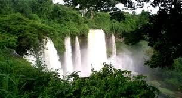
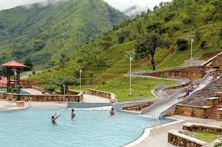
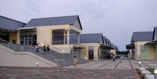

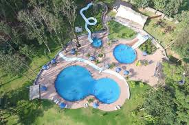


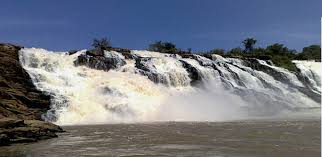
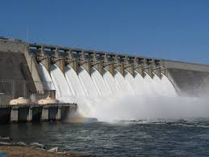

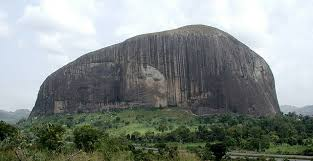
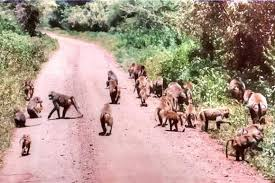
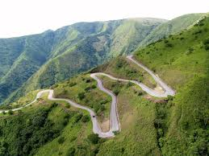
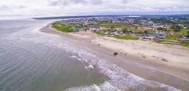
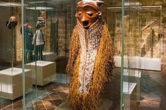
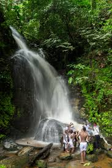
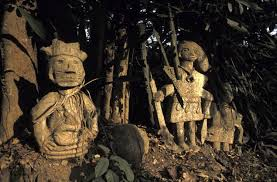
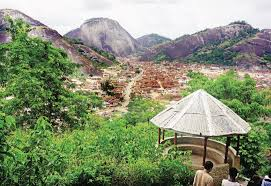
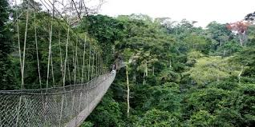
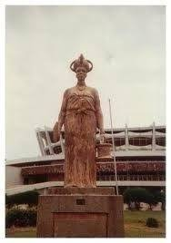
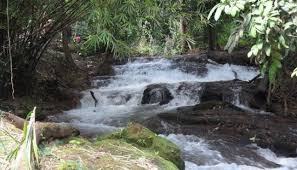

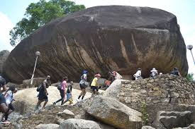
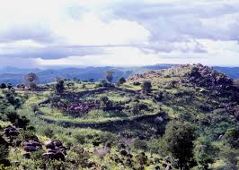
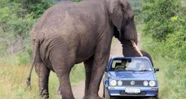

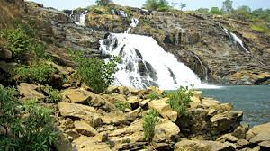
From Wikipedia
Photos from Google